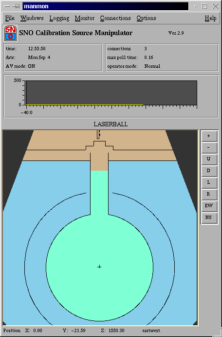
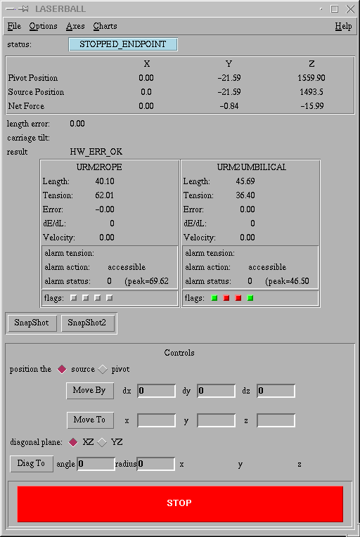

manmon is the graphical user interface to the SNO calibration
manipulator and the SNO calibration laser. It is a Tcl/Tk script running
on any machine supporting dp_wish (the TCP/IP version of Tcl/Tk).
Log on to a computer with manmon installed using the
account manipulator. Current machines running manmon
are:
site: alcor, polaris
queens: cygnus
Change directory to the manmon directory:
alcor> cd manmon
Start the manmon program,
alcor> manmon
The main manmon window (showing a cross section of the detector)
should appear. Before connecting to the manipulator computer, there is
no water drawn in the cavity. Manmon automatically tries to connect to the
manipulator computer. If it successfully connects then the light and
heavy water levels in the cavity should be drawn on the main window.
If manmon fails to connect to the manipulator computer try again.
Sometimes there is a problem connecting and a repeated effort usually
succeeds.
Stopping Manmon
To stop manmon, go to the File menu on the main window
and select Exit. Manmon should disconnect from the manip
and shutdown.
Main Window
The main manmon window appears when the program is started.

AV mode:
Indicates if manipulator is caculating AV position
connections:
The number of clients connected to the manipulator computer. There
are usually at least 4 clients: The DAQ computer, the CMA computer
and the manip logger computer (polaris).
max poll time:
The manipulator computer polls the manipulator hardware in a continuous
loop. max poll time indicates the maximum time taken to
loop through the hardware in the last several seconds. The units are
milliseconds. If this looping time becomes too large, a "watchdog timer"
error will occur and the manipulator hardware shuts off.
operator mode:
The normal operator mode is Normal which allows the manipulation
of source using high level commands (referred to as polyaxis commands).
These normal mode operations have many safety checks to prevent improper
operation of the hardware. However sometimes it is necessary to directly
operate the low level manipulator hardware. Out of necessity, these
low level operations have little or no checking of error conditions.
To prevent casual use of low level commands, the maniplator computer
has an "expert mode". The operator mode indicates if the manipulator
computer is currently in normal or expert mode.
Strip Chart
Below the status panel on the main window is a strip chart showing
the max poll time. Normally, the maximum poll time is less than
50 ms. However, there is a known problem where due to ethernet
trafic, the manipulator computer freezes for a large fraction of a second
and the poll time can become of order 500ms or more. If the poll time
goes above 250 ms, the manipulator computer will stop any source movement.
To diagnose an unexpected stop due the slow hardware polling, check this
strip chart to see if there are large poll times.
Source Display
The bottom of the main window contains a display of the currently
shown calibration source. It indicates the position of the source
as well as the water levels in the cavity and AV. The buttons on the
right can be used to zoom in on the source or pan around the vessel.
Menu Bar
File Menu
Connect
Connect manmon to the manipulator computer.
Disconnect
Disconnect manmon from the manipulator computer.
Exit
Disconnect manmon from the manipulator computer and exit manmon.
Windows Menu
Sources
This submenu gives a list of all the sources that the manipulator
computer knows about. Selecting a source displays the source window
for that source.
Axes
This submenu lists all the axes in the manipulator system (ropes and
umbilicals). Selecting an axis will open the axis window for
that axis.
AV
Open a window displaying the AV status.
Laser
Open the laser window used to control the calibration laser.
Command
Open a command dialog window. This allows the operator to send
commands directly to the manipulator computer.
Connections
Edit Connections
Opens a window to view what clients are connected to the manipulator
computer. Clients can be disconnected using this window.
Options
Expert Mode
Toggle in or out of expert mode. Password is required to enter expert
mode. No password is required to leave expert mode and it will auto
time out after 30 minutes.
Source Window
The source window shows information related to the source polyaxis.
A polyaxis is the
multirope (and umbilical) object connected to a source.

Pivot Position:
Shows the location of pivot on the source carriage in the detector.
Source Position:
Shows the location of the centre of the source. Note that the
manipulator positions sources using the pivot location. The source
location is an offset from the pivot that is stored in a data file.
Net Force
Not used.
Length Error:
If side ropes are connected to the source, the source position in the
vessel is determined by the side ropes. The manipulator computer then
calculates what the length of the central rope should be and compares it
to the measure central rope length. The difference is the length error.
carriage tilt:
The calculated tilt of the manipulator carriage.
Length:
The length of each axis connected to the source is displayed.
Tension:
The tension of each axis connected to the source is displayed.
Error:
The encoder error of each axis connected to the source is displayed.
The encoder error is the discrepancy between the position that the
stepper motor drives the source to and the length determined by the
shaft encoder on the axis. A large encoder error can indicate that
either the shaft encoder or the motor has failed. Thus the manipulator
computer shuts down if the encoder error reaches +/- 10 (units are cm).
However, an encoder error can also accumulate if there is a miscalibration
of either the motor or encoder.
dE/dL:
The rate of change of encoder error with change in the length that
the motor tries to drive the axis to. A small dE/dL is indicative of
a miscalibration of either encoder or motor. Small is of order 0.05
(a 5% miscalibration). A large dE/dL (of order 0.5 or 1) is indicative
of a failure of a motor or encoder.
Velocity:
Velocity at which axis is driven. Positive velocities mean that
the axis is getting longer (usually the source is moving down),
negative velocities mean that the axis is getting shorter (source
moving up).
Alarm Tension:
The tension at which an axis generates an alarm stop. If the
load cell goes over this tension, an alarm is generated and depending
on the alarm action the manipulator computer may refuse to move
this axis (this is the usual action).
Alarm Action:
The action that the manipulator computer will take if the axis tension
exceeds the alarm level.
0 = no action
1 = warning
2 = stop axis
Alarm status:
The present status of the alarm and the peak tension since the
manipulator was last turned on (note that the peak value is lost
when the manipulator computer is shut off).
flags:
Axis flags are digital inputs usually used as interlocks. The use
of these bits is not uniform across all URMs at present:
URM2ROPE
no bits used
URM2UMBILICAL
bit 0 (left most) used to indicate umbilical carriage too far forward
(i.e. too much umbilical has been played out and the take up reel will
come off it's rail).
URM3ROPE
bit 0 (leftmost) rope overtension.
URM3UMBILICAL
bit 0 - too much umbilical out. bit 1 - too much umbilical on URM.
If an interlock is failed, the bit is red and the axis is not allowed
to operate. If the bit is green the interlock is ok.
TR VALIGN=TOP>
SnapShot
Snapshot records the state of the source to a file
labeled _yymmdd.snapshot.
Source position, rope tensions and lengths are recorded to a file.
SnapShot2
Snapshot2 records the state of the source to a file
labeled _yymmdd.snapshot2.
Information include is the date, hour,min,sec, the position,
the error values and the
information on each axis including encoder and motor info.
One entry per line in an ascii
file.
TR VALIGN=TOP>
Position the source/pivot
Select how the source will be moved. Either by the centre of the
source or by the manipulator pivot. Default is the centre of the
source.
Move By
Move the source by the amounts dx,dy,dz. Source is moved either
with reference to the manipulator pivot or the centre of the source
depending on the position select.
Move To
Move the source to absolute location x,y,z. Source is moved either
with reference to the manipulator pivot or the centre of the source
depending on the position select.
Diag To
Move the source along a diagonal set at angle to
a radius
Source is moved either
with reference to the manipulator pivot or the centre of the source
depending on the position select.
STOP
Immediately halt the manipulator.
Menu Bar
File Menu
Close Window
Closes the source window.
Options Menu
Stepping Control
Window to allow source movements in small steps.
Logging
Log source status to file.
Reset Umbilical
Reset the umbilical encoder. Requires expert mode.
Axes Menu
Lists the axes connected to the source and opens axis windows
for them.
Charts Menu
Position
Strip charts of source position
Ropes
Strip charts of rope parameters (length, tension, erorrs etc).
Expert Mode
Low level manipulator operations are excluded under normal
operation. However, it is sometimes necessary to access the
low level manipulator commands. To do this from manmon, you
must enable expert mode. To see if you are in expert mode,
look at the operator mode status on the main manmon window.
It will be either "Normal" or "Expert" (indicated in red).
In the main window, go to the Options menu. Select
Expert Mode.
Enter the expert mode password in the dialog box.
Once enabled, expert mode persists for 30 minutes. To disable expert
mode, select Expert Mode from the Options menu.
Known Bugs
The axis command from within a source still does not get
the source list right.